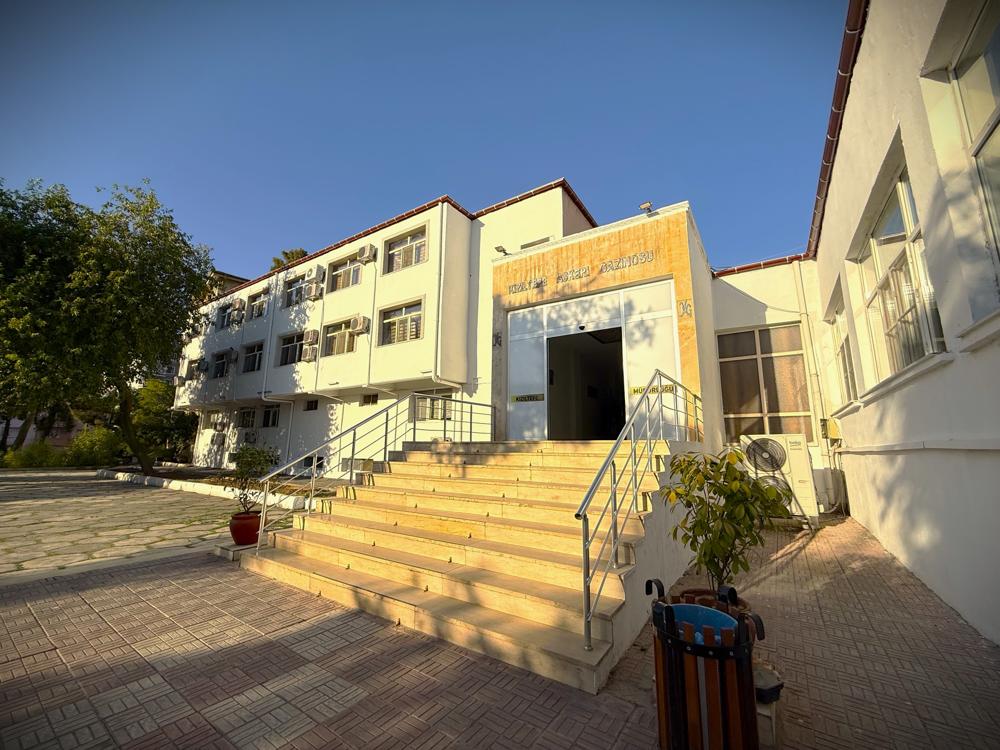
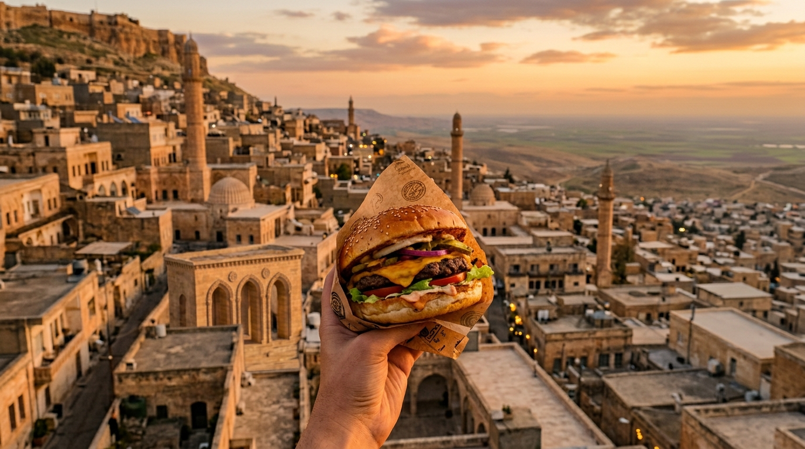
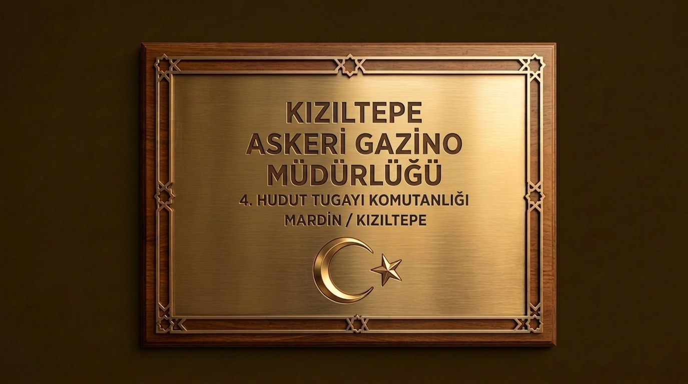

Lezzetin ve kahvenin buluştuğu özel mekan.
Taptaze lezzetler, kaliteli hizmet ve samimi atmosferimizle sizlere keyifli bir deneyim sunuyoruz.



📍 Tepebaşı Mah. Mardin Cad. Kızıltepe Askeri Gazino Misafirhanesi No:4/5
Kızıltepe / MARDİN
☎ 0 482 312 68 96